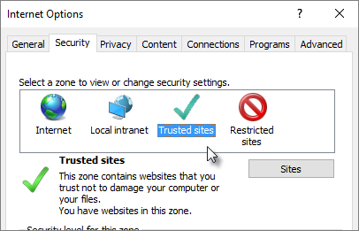

In some Office 365 business subscriptions, mainly when used in conjunction with SharePoint Online, your Office 365 app launcher might not show some customisations you've made, such as resized tiles or apps pinned to the navigation bar. Changing your SharePoint Online site listing in the Internet Explorer Trusted Sites list should help keep your customisations.
1.Sign out of Office 365.
2.In Internet Explorer, select Tools > Internet Options.
3.On the Security tab, select Trusted Sites, then click Sites.

4.In Trusted Sites, in the Websites box, find any site listed in the form http://yourcompany.sharepoint.com, for example, http://contoso.sharepoint.com. Click the site in the list and click Remove.
5.In the box at Add this website to the zone, enter your company's SharePoint Online URL in the form http://yourcompany-files.sharepoint.com and click Add.
Then enter it again in the form http://yourcompany-myfiles.sharepoint.com, and click Add.

Your company should have two listings, as in the illustration above. If not, some features of SharePoint Online might not work correctly.
6.When you're done, close the Trusted Sites window, close Internet Options, and then restart your browser. (Don't reboot your device; only restart your browser.)
7.Sign in to Office 365 again.
NOTE: Depending on the group policies your organisation is using, any sites that you remove from your list of trusted sites might get re-added to that list when you reboot your device.